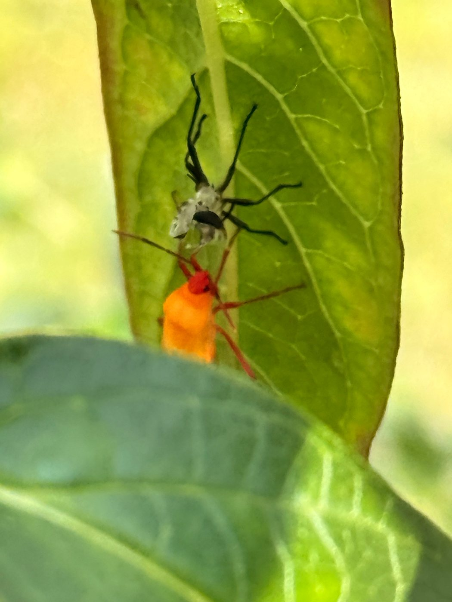
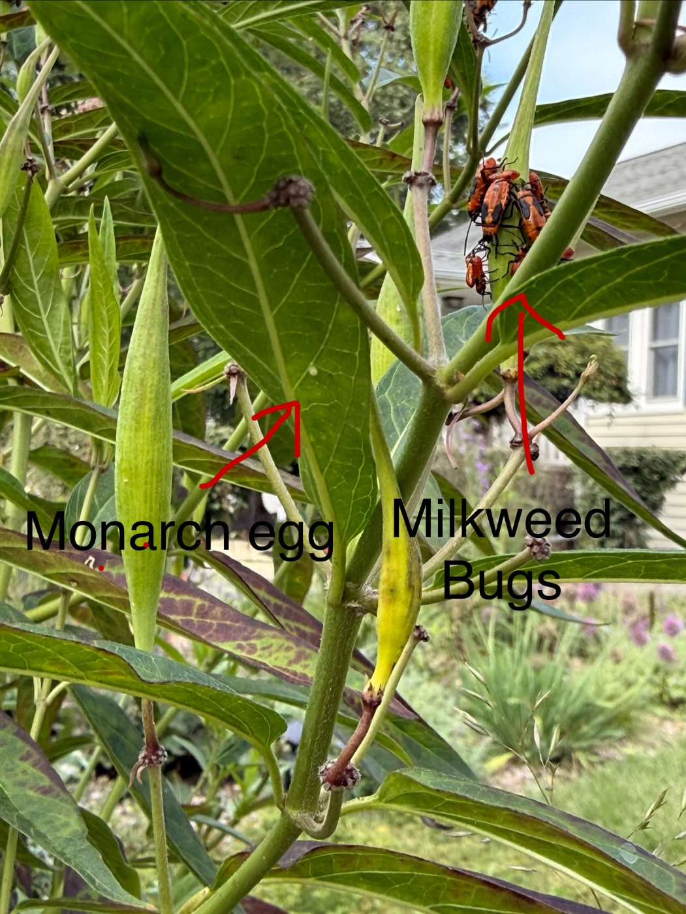
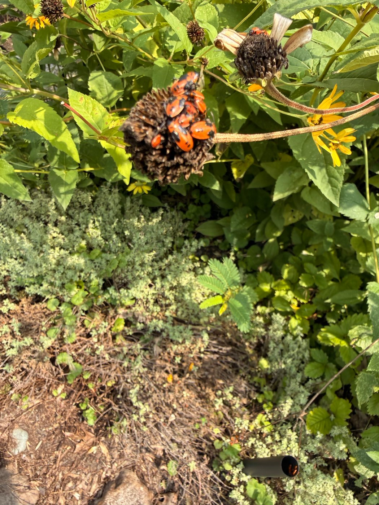
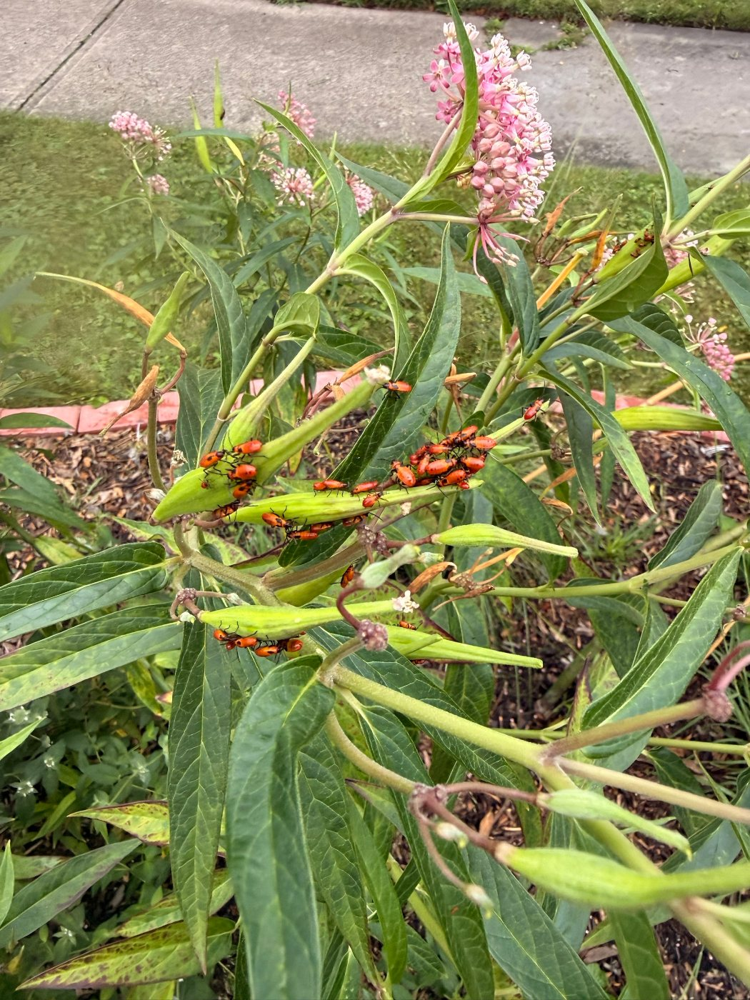

The orange-and-black bug of the milkweed pods — a seed-feeder that drinks from developing seeds through the pod wall, gathers in bright clusters of nymphs and adults, and wears the plant's own toxins as a warning. Harmless to monarchs and to the plant.
Look at a milkweed pod in August and there is a good chance it is wearing a crowd of bright orange-red bugs. The adults are elongate and half an inch or more long, patterned in orange and black: a black triangle at the front of the wings, a broad black band across the middle, and black tips. The nymphs are pure orange with black legs and antennae, and as they grow they gain black wing pads and a row of black spots down the back. All ages pile together on the pods, and the effect on a swamp milkweed in late summer is unmistakable.
They are true bugs, with a slender beak folded under the head rather than jaws. The bug pushes it through the pod wall into a developing seed, injects saliva that dissolves the seed's contents, and drinks. That is very nearly all it eats. Like the monarch, it stores the milkweed's cardenolide toxins in its body, and the orange-and-black uniform is the same warning to birds: not worth eating. Unlike the monarch it takes nothing from the leaves, and it does no lasting harm to the plant.
The Large Milkweed Bug is part of the milkweed community — one of a dozen insects that have solved milkweed's chemical defences and live nowhere else. It shares the plant with monarchs without competing for them, and its clusters are a sign of a healthy, unsprayed milkweed patch that is setting seed.
Best supported by
Milkweed allowed to set podsSeveral milkweed plantsSeed heads left standingNo insecticidesSunny, open ground
Field Guide Plate
Large Milkweed Bug
From the Garden
Seen in This Planting
Photographed on the swamp milkweed in this garden over one late summer. Between them, the four pictures show most of the bug's life: a freshly moulted nymph, a crowd of adults, a monarch egg sharing the same plant, and older nymphs wandering off the milkweed once the pods were spent.

A nymph minutes after moulting, still pale, beside its shed skin

Adults on a pod tip · a monarch egg on the leaf below · same plant, same day

Late nymphs probing a false sunflower seed head after the milkweed pods were spent

The classic sight · nymphs massed on swamp milkweed pods in August
Plant Relationships
Where You'll Find Them
Milkweed, and specifically milkweed pods. The bugs are drawn to the developing seeds, so they appear on any milkweed that is allowed to flower and set fruit; the more plants, the larger the crowd. Late in the season, when pods split or dry out, older nymphs and adults wander and will probe other seed heads nearby — which is how a cluster ends up on a false sunflower. They share the milkweed with the Monarch and the aphids on its stems. Tap any plant to read its profile.
Adults arrive from the south in June and find milkweed as it comes into flower. Females tuck clusters of twenty to thirty pale yellow eggs into crevices on pods, flower stalks, and leaf bases; the eggs turn red before hatching in four or five days.
Midsummer
Tiny orange nymphs cluster on the first pods and begin feeding on the seeds inside. Five moults over about a month; wing pads appear at the third stage and darken with each one. Each moult leaves a papery shed skin on the leaf.
Late summer
Peak numbers in August and September — a second generation of adults, and pods crowded with nymphs of every size. This is the sight that gives the bug its reputation.
Fall
As days shorten the last adults stop breeding, feed up, and fly south; nymphs still on the pods wander to other seed heads as the milkweed dries. Most that remain in Ohio are killed by frost.
Winter
A few adults may survive in leaf litter in a mild winter, but the Ohio population is largely re-founded each summer by migrants from the south, in the same way as the monarch.
Habitat & Needs
What It Needs
Food
Milkweed seeds, drunk through the pod wall with the beak; adults also take some nectar and will probe other seeds when milkweed is scarce
Host plants
Any milkweed that sets pods — common, swamp, and butterfly milkweed all serve; a patch of several plants holds a colony better than one
Season
Pods from midsummer to fall; the bug's whole year in Ohio is built around them
Warmth
Sunny, open ground; the clusters bask on the pod surface and are sluggish on cool mornings
Defence
Milkweed toxins stored in the body, advertised by orange and black; few birds try twice
Predators
Few, thanks to the toxins — spiders, assassin bugs, and some parasitic flies take a share
What harms
Insecticides on milkweed, and deadheading or cutting milkweed before it sets pods
Living With Them
Should You Do Anything?
No. The Large Milkweed Bug is the most conspicuous insect on a milkweed patch and the one gardeners most often ask about, and the answer is that it needs no managing at all.
It does not hurt monarchs. Milkweed bugs feed on seeds, not leaves, and do not eat monarch eggs or caterpillars. The photographs above were taken on a plant carrying both at once.
It does not hurt the plant. Some seeds in a crowded pod are drained and fail to ripen. An established milkweed makes far more seed than it needs, and the plant itself is untouched.
Never spray. Anything that kills milkweed bugs kills monarch caterpillars on the same plant. Milkweed is the one bed where insecticide has no place at all.
Leave the pods. If you are saving milkweed seed, pick a few pods early and bag them; leave the rest to the bugs and to the wind. A pod crowd in August is a sign the patch is working.
Enjoy the show. The clusters are easy to watch and photograph, and a milkweed with monarch caterpillars, aphids, and milkweed bugs all at once is a complete native food web on a single stem.
Did You Know?
The Stories Behind This Bug
01
The Milkweed Village
Milkweed defends itself with sticky latex and heart-poison cardenolides, and most insects leave it alone. A small guild has broken through, and almost all of them wear orange and black: the monarch, the milkweed bugs, the red milkweed beetle, the milkweed leaf beetle, the orange milkweed aphid, the milkweed tussock moth. Each stores the plant's toxins and advertises the fact. A bird that learns from one of them avoids the rest — a shared warning uniform that makes every member of the village safer.
02
Why They Crowd
Milkweed bug nymphs feed in groups on purpose. The saliva they inject to dissolve a seed works better when many bugs share a pod, and a cluster of bright orange bodies is a louder warning to a bird than one small nymph. Hatching from an egg cluster together, they stay together through most of their moults — which is why a pod is either bare or covered, and rarely in between.
03
A Migrant Like the Monarch
Ohio's milkweed bugs do not, for the most part, survive an Ohio winter. Like the monarch, they are migrants: the summer's population is descended from adults that flew north from the Gulf states in spring, and the fall's last adults respond to the shortening days by ceasing to breed, storing fat, and flying south again. In a mild year a few overwinter in leaf litter, but the pattern is a yearly recolonisation from the south.
04
The Insect in the Laboratory
The Large Milkweed Bug is one of the most studied insects in the world, and for an unglamorous reason: it is easy to keep. It will live for generations on nothing but sunflower seeds and water, it is big enough to handle, and its nymphs grow through clean, countable stages. Since the 1950s it has been a standard laboratory animal for hormone, development, and migration research, and it was among the first insects to have its full genome sequenced. The pod crowd on your milkweed has a long scientific pedigree.
Look-Alikes
Milkweed Bugs & Their Doubles
Orange and black is the milkweed uniform, so several of the plant's other residents look alike at a glance — and one unrelated bug is mistaken for this one every fall.
This Page · The Pod Crowd
Large Milkweed Bug
Oncopeltus fasciatus
Elongate, orange-red, with a straight black band across the middle of the wings, a black triangle at the front, and black tips. Nymphs plain orange with black legs. In clusters on milkweed pods, midsummer to fall.
Black bandOn podsClustersMigrant
The Smaller Cousin
Small Milkweed Bug
Lygaeus kalmii
Smaller and darker: mostly black, with a red X or heart across the back and white spots on the wing edges. Overwinters as an adult in Ohio and is the milkweed bug seen on spring flowers; also scavenges dead insects.
Red XSpringOverwinters
Beetle, Not Bug
Red Milkweed Beetle
Tetraopes tetrophthalmus
A stout red longhorn beetle with black spots and long antennae that split each eye in two. Chews milkweed leaves and flowers rather than piercing them, squeaks when handled, and its larvae feed in the roots.
SpotsLong antennaeChews leaves
The Autumn Impostor
Boxelder Bug
Boisea trivittata
Black with thin red lines rather than orange with black bands, and found on boxelder and maple, not milkweed. The one that gathers on sunny walls and slips indoors in October — often blamed on the milkweed bugs next door.